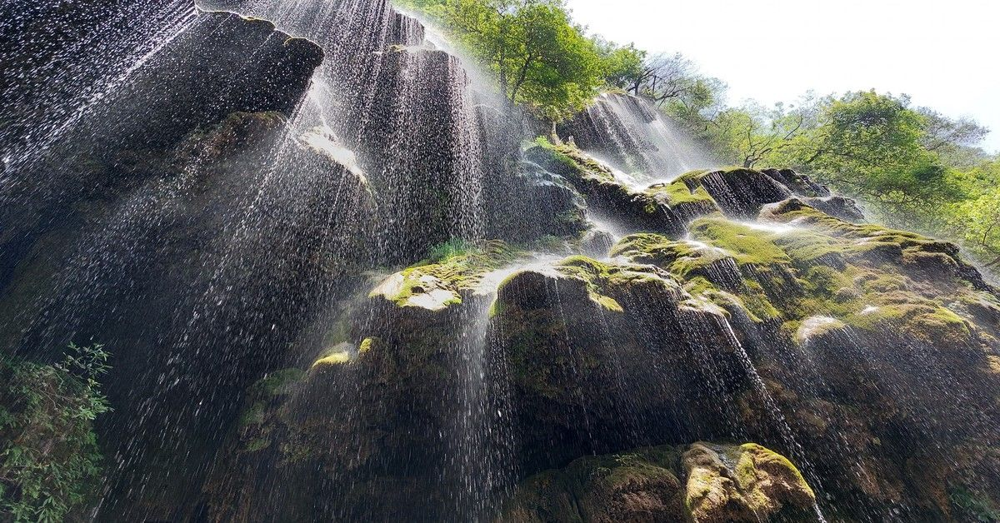

A stunning natural wonder near Islamabad — the Umbrella Waterfall cascades in a unique umbrella shape through lush green hills, perfect for a day or overnight escape.

=======The Umbrella Waterfall, also known as Saidpur Waterfall, is located in the Margalla Hills near Islamabad, Pakistan's capital. It is named for the unique umbrella-like shape of its cascading water that spreads out as it falls over the rocks, creating a beautiful natural canopy of water.
Surrounded by lush green hills and dense forest, the waterfall is a refreshing and accessible escape for residents of Islamabad and Rawalpindi. It is especially stunning after monsoon rains when the water flow is at its strongest.
The Umbrella Waterfall is ideal as a day trip from Islamabad or Rawalpindi. However, we also offer overnight packages combining the waterfall with nearby attractions such as the Margalla Hills trails, Daman-e-Koh, and Saidpur Village for a complete experience.
The waterfall can be visited year-round, but is most spectacular from July to September during and after the monsoon season. Spring (March–May) also offers beautiful greenery and mild temperatures.
Book our day or overnight tour packages and enjoy a refreshing escape to this natural wonder near Islamabad.